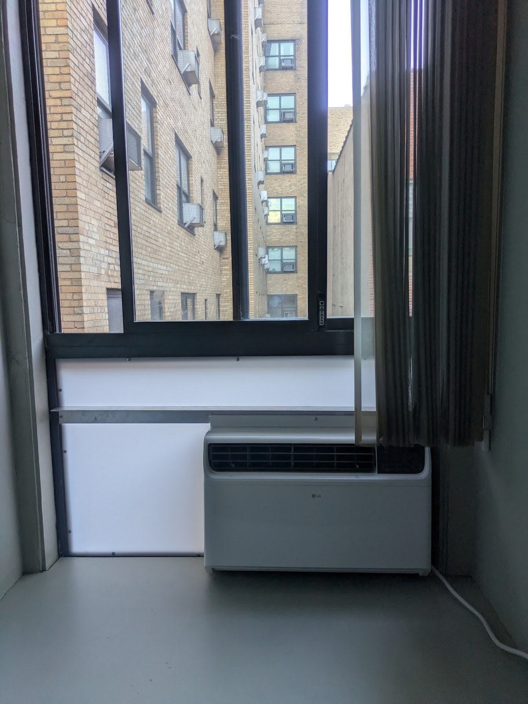
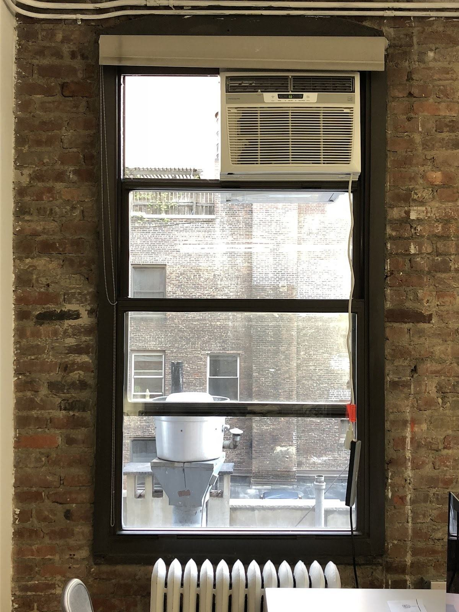
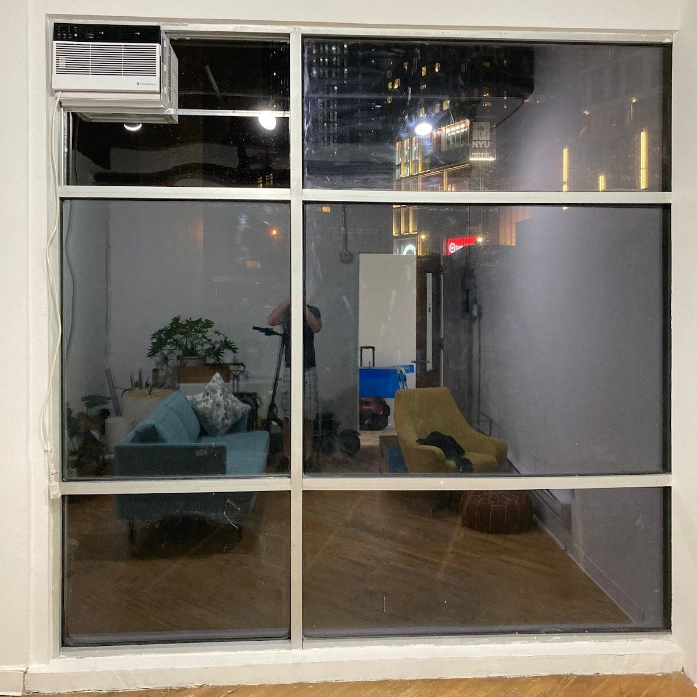
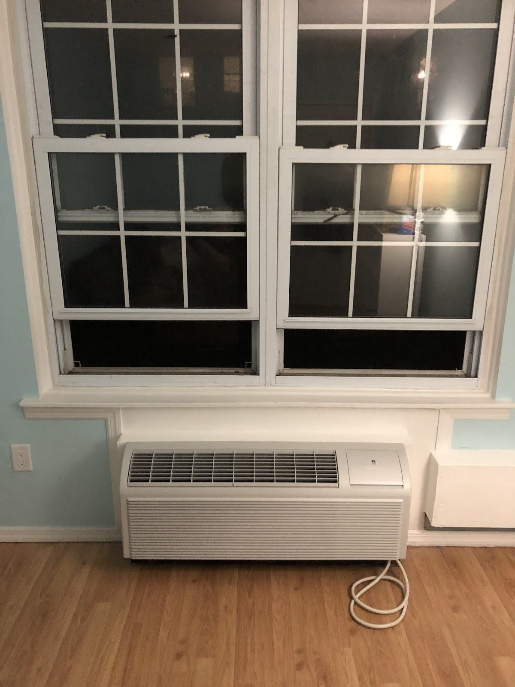
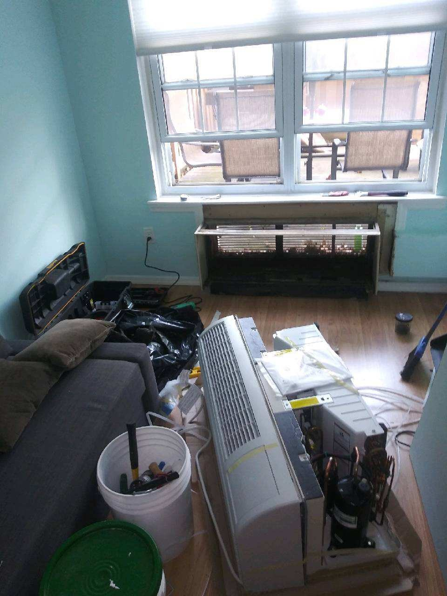

Window and wall air-conditioner installation
Tell us about the unit, window or wall opening.
Air conditioning · Brooklyn, NY
Installation, repairs and seasonal service for window, wall and PTAC air conditioners. Talk to StayCoolNYC about your unit.
LET’S TALK ABOUT YOUR AC


START WITH YOUR EQUIPMENT
Not sure? Send a clear photo of the unit and opening.
Discuss your unitAC INSTALLATION & SERVICE
A window, a wall sleeve or a PTAC unit—send the details and ask about the service you need.
Tell us about the unit, window or wall opening.
Share the type of unit and what needs attention.
Describe the AC problem and the equipment involved.
Ask about seasonal care for your air conditioner.
HOW IT WORKS
Share the equipment and the issue.
Ask your questions before deciding.
Describe your AC question and your Downtown Brooklyn location.
Discuss the unit, opening and scope of the request.
Talk through the details and choose what comes next.
UNITS, WINDOWS & WALLS
Supplied business photos.
Details of the units and spaces.



SERVICE AREA
Ask StayCoolNYC about AC installation, repair or seasonal service in Downtown Brooklyn, Brooklyn, NY.
Discuss your unit and locationBEFORE YOU GET IN TOUCH
Call or send a message with the issue, the equipment involved and your neighborhood. Ask what information is needed to discuss an estimate.
If you smell gas, suspect carbon monoxide or see smoke, leave the building and call 911 or your gas utility from outside. For a leak or loss of heat, avoid hazards and seek appropriate help; do not rely on this website in an emergency.
Ask about service in Downtown Brooklyn, Brooklyn. Contact the business to confirm the location and scope of your request.
Include your name, a way to reach you, your neighborhood and a short description of the issue. You can attach a clear equipment photo in your own messaging or email app. Avoid sensitive personal information.